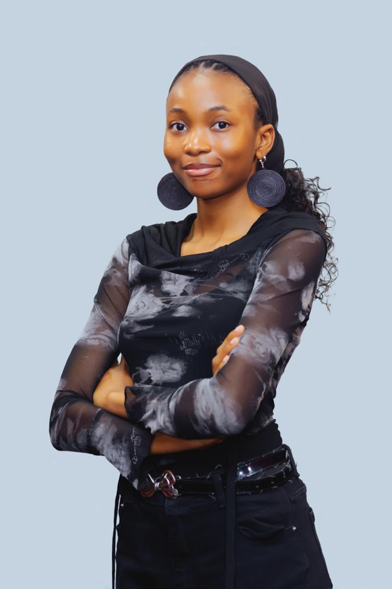

AI Researcher and Engineer building diagnostic AI for healthcare settings where it matters most. Graduate researcher at Carnegie Mellon University. Reviewer, Deep Learning Indaba 2026.
Scroll DownI am a graduate researcher at Carnegie Mellon University Africa working at the intersection of deep learning and medical imaging. My research focuses on making diagnostic AI accurate, efficient, and deployable in low-resource clinical settings.
My work spans brain tumor classification, diabetic retinopathy screening, breast cancer risk triage, and MRI reconstruction for hospitals where high-field scanners and specialist care are scarce. I believe that building solutions for low resource setting is building a solution that works anywhere
Before graduate school, I spent years building production systems with Django and FastAPI — engineering experience that now informs how I design AI systems that move from notebooks to real-world deployment.
Open to conversations about research collaboration, opportunities in AI and healthcare, and any work at the intersection of machine learning and clinical impact.
Damilola